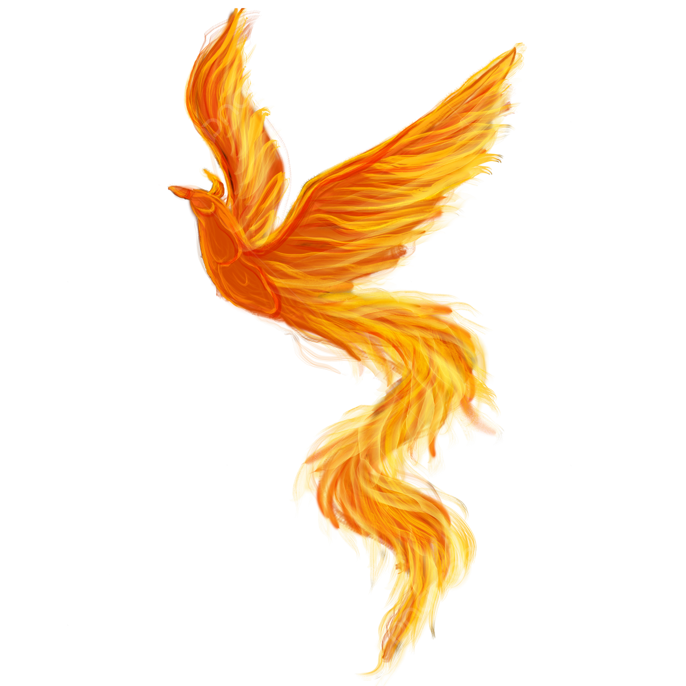

<div class="main-toolbar">

  <div class="main-toolbar__container-left">
    <div class="main-toolbar__container-left__icon-back-container" routerLink="/mainPage">
      
    </div>
    <div class="main-toolbar__container-left__title">Phoenix Games</div>
  </div>

    <div class="main-toolbar__container-login">
        <div class="main-toolbar__container-login__background-user-icon">
          
        </div>
        <div class="main-toolbar__container-login__container-user">
          <div class="main-toolbar__container-login__container-user__userName">SEFT99</div>
          <div class="main-toolbar__container-login__container-user__email-user">sebas.1910@hotmail.com</div>
        </div>

        <mat-icon class="moreOptions" [matMenuTriggerFor]="afterMenu">
          keyboard_arrow_down
        </mat-icon>
        <mat-menu #afterMenu="matMenu" xPosition="after">
          <button mat-menu-item>
            <p class="menu-options-text">Ver Perfil</p>
          </button>
          <button mat-menu-item class="menu-options-text" routerLink="/login">
            <p class="menu-options-text">Cerrar Sesion</p>
          </button>
        </mat-menu>
    </div>

</div>


